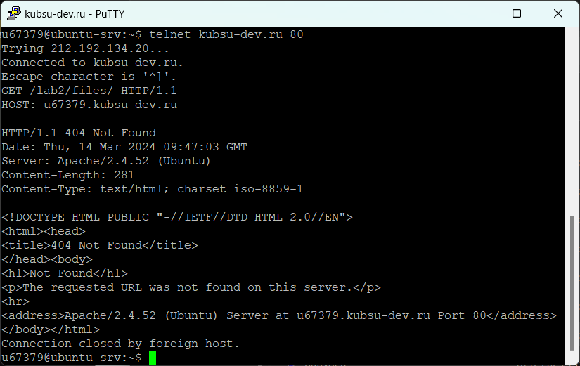
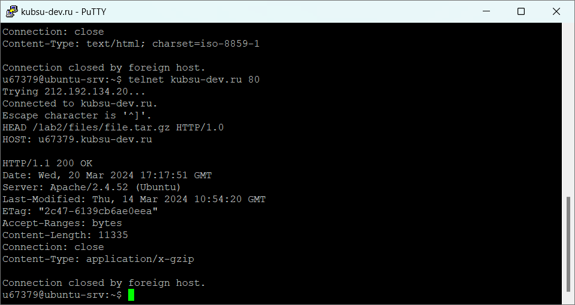

.png)
Для начала, создали на GitHub новый репозиторий, в который добавили папку files. Как и в первом задании, создали ssh ключ и добавили содержимое репозитория на сервер, в папку www.
.png)
1. Получить главную страницу методом GET в протоколе HTTP 1.0. Для начала используем команду telnet, которая позволяет удаленно передавать текстовые запросы на сервер, для ручного управления процессами. В данном случае, команда telnet kusbsu-dev.ru 80 позволила подключиться на сервер по указанному порту, в дальнейшем нам открывается командная строка. В ней указано GET / HTTP/1.0 GET - получаем данные от сервера далее указали протокл и его версию. Получили содержимое коренвого ресурса
2. Получили внутреннюю страницу методом GET в протоколе HTTP 1.1; В данном случае запрашиваем внутреннюю страницу, и указываем адрес сервера, к которому делаем запрос на что получаем код внутренней страницы
3. Определили размер файла file.tar.gz, не скачивая его; В данном случае размер файла указан в строке Content-Length
.png)
4. Определили медиатип ресурса /image.png; В данном случае ответ в строке Content-Type
.png)
5. Отправили комментарий на сервер по адресу /index.php; curl - используется для передачи данных, -X POST - указываем метод запроса, в данном случае это POST запрос (служит для отправки данных на сервер) -d "comment = ..." - опция для передачи данных, -H "Content-type: application/x-www-form-urlencoded" - тип содержимого,u67379.kubsu-dev.ru/lab2/files/index.php - адрес, на который отправляем запрос
.png)
6. Получили первые 100 байт файла /file.tar.gz; Первая строка запроса отправляет запрос для загрузки файла file.tar.gz с сервера. Далее указали адрес сервера, Range: bytes=0-99 - указали позицию диапозона байтов, которые хотим загрузить из файла. В данном случае запросили первые 100 байт (байты с 0 по 99). После этого сервер отправляет клиенту только указанный диапозон байт файла
.png)
7. Определили кодировку ресурса /index.php. В данном случае кодировка UTF-8